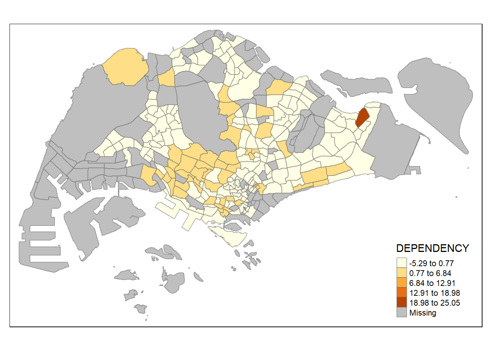
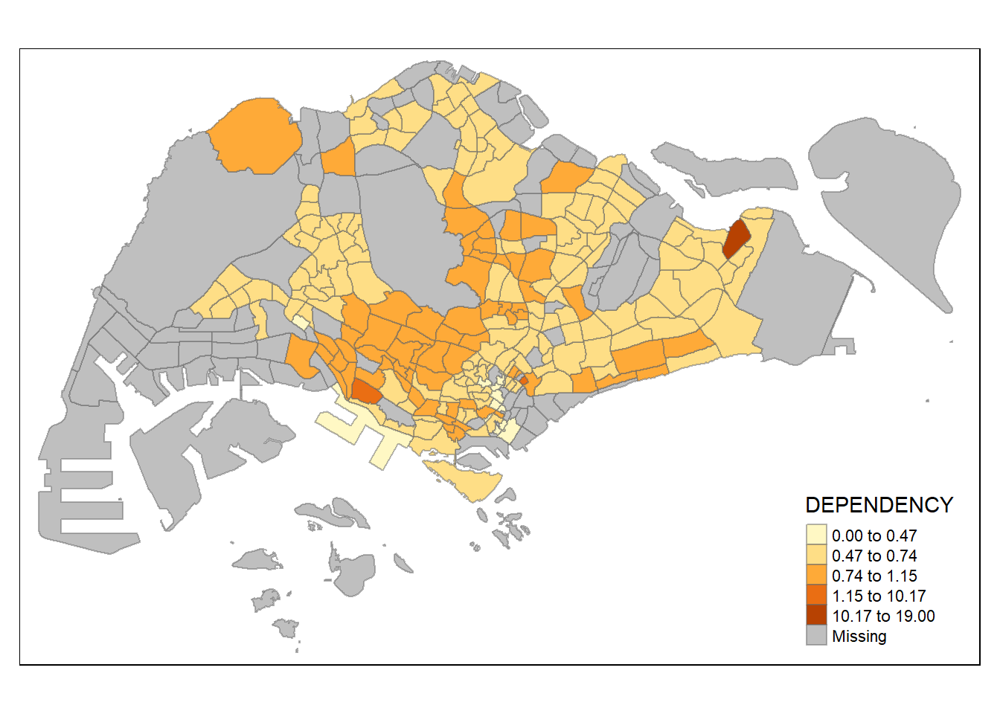
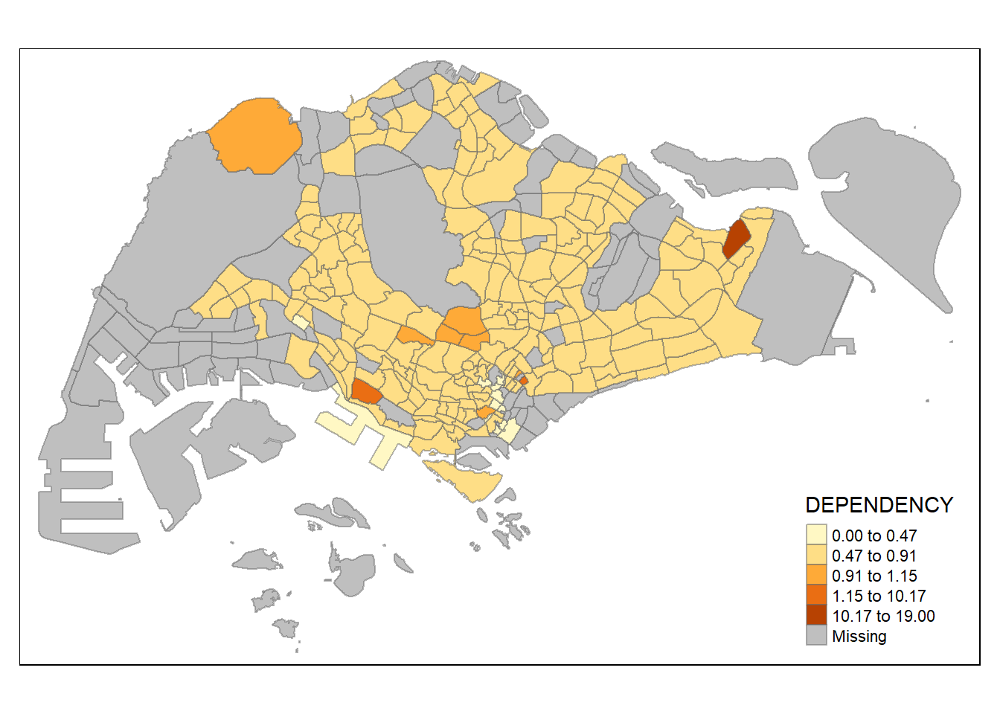
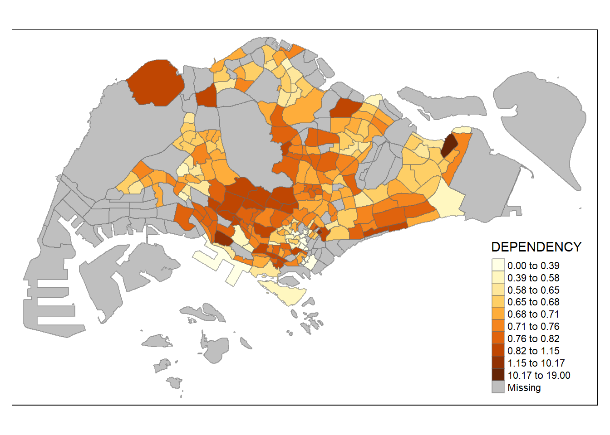

pacman::p_load(sf, tmap, tidyverse)Hands-on Exercise 1.2: Thematic Mapping and GeoVisualisation with R
1 Overview
Thematic mapping uses map symbols to represent specific characteristics of geographic features that are not naturally visible, such as population, temperature, crime rates, and property prices. This allows us to visualize data that would otherwise remain unseen.
On the other hand, geovisualization provides graphical representations to make places, phenomena, or processes more understandable. It leverages the power of spatial cognition associated with our eye-brain vision system, enhancing our ability to process and interpret spatial information.
In this chapter, we explore how to create accurate and meaningful choropleth maps using the tmap package in R.
2 Import R Packages
p_load() of pacman package is used to install and load sf, tmap and tidyverse packages into R environment.
3 Import Data into R
3.1 Data Acquisition
Master Plan 2014 Subzone Boundary (Web) (
MP14_SUBZONE_WEB_PL) from data.gov.sg: this geospatial data is in ESRI shapefile format, which consists of the geographical boundary of Singapore at the planning subzone level. The data is based on the URA Master Plan 2014.Singapore Residents by Planning Area / Subzone, Age Group, Sex and Type of Dwelling, June 2011-2020 (
respopagesextod2011to2020.csv) from Department of Statistics, Singapore: this is aspatial data in csv format. Although it does not contain any coordinates values, itsPAandSZfields can be used as unique identifiers to geocode to MP14_SUBZONE_WEB_PL shapefile.
3.2 Import Geospatial Data into R
MP14_SUBZONE_WEB_PL shapefile: st_read() function of sf package is used to import this shapefile into R as a simple feature data frame called mpsz.
mpsz = st_read(dsn = "data/geospatial",
layer = "MP14_SUBZONE_WEB_PL")Reading layer `MP14_SUBZONE_WEB_PL' from data source
`C:\thuphuong1110\ISSS626-GAA\Hands-on_Ex\Hands-on_Ex01\data\geospatial'
using driver `ESRI Shapefile'
Simple feature collection with 323 features and 15 fields
Geometry type: MULTIPOLYGON
Dimension: XY
Bounding box: xmin: 2667.538 ymin: 15748.72 xmax: 56396.44 ymax: 50256.33
Projected CRS: SVY21We can quickly examine the content of mpsz using below code.
mpszSimple feature collection with 323 features and 15 fields
Geometry type: MULTIPOLYGON
Dimension: XY
Bounding box: xmin: 2667.538 ymin: 15748.72 xmax: 56396.44 ymax: 50256.33
Projected CRS: SVY21
First 10 features:
OBJECTID SUBZONE_NO SUBZONE_N SUBZONE_C CA_IND PLN_AREA_N
1 1 1 MARINA SOUTH MSSZ01 Y MARINA SOUTH
2 2 1 PEARL'S HILL OTSZ01 Y OUTRAM
3 3 3 BOAT QUAY SRSZ03 Y SINGAPORE RIVER
4 4 8 HENDERSON HILL BMSZ08 N BUKIT MERAH
5 5 3 REDHILL BMSZ03 N BUKIT MERAH
6 6 7 ALEXANDRA HILL BMSZ07 N BUKIT MERAH
7 7 9 BUKIT HO SWEE BMSZ09 N BUKIT MERAH
8 8 2 CLARKE QUAY SRSZ02 Y SINGAPORE RIVER
9 9 13 PASIR PANJANG 1 QTSZ13 N QUEENSTOWN
10 10 7 QUEENSWAY QTSZ07 N QUEENSTOWN
PLN_AREA_C REGION_N REGION_C INC_CRC FMEL_UPD_D X_ADDR
1 MS CENTRAL REGION CR 5ED7EB253F99252E 2014-12-05 31595.84
2 OT CENTRAL REGION CR 8C7149B9EB32EEFC 2014-12-05 28679.06
3 SR CENTRAL REGION CR C35FEFF02B13E0E5 2014-12-05 29654.96
4 BM CENTRAL REGION CR 3775D82C5DDBEFBD 2014-12-05 26782.83
5 BM CENTRAL REGION CR 85D9ABEF0A40678F 2014-12-05 26201.96
6 BM CENTRAL REGION CR 9D286521EF5E3B59 2014-12-05 25358.82
7 BM CENTRAL REGION CR 7839A8577144EFE2 2014-12-05 27680.06
8 SR CENTRAL REGION CR 48661DC0FBA09F7A 2014-12-05 29253.21
9 QT CENTRAL REGION CR 1F721290C421BFAB 2014-12-05 22077.34
10 QT CENTRAL REGION CR 3580D2AFFBEE914C 2014-12-05 24168.31
Y_ADDR SHAPE_Leng SHAPE_Area geometry
1 29220.19 5267.381 1630379.3 MULTIPOLYGON (((31495.56 30...
2 29782.05 3506.107 559816.2 MULTIPOLYGON (((29092.28 30...
3 29974.66 1740.926 160807.5 MULTIPOLYGON (((29932.33 29...
4 29933.77 3313.625 595428.9 MULTIPOLYGON (((27131.28 30...
5 30005.70 2825.594 387429.4 MULTIPOLYGON (((26451.03 30...
6 29991.38 4428.913 1030378.8 MULTIPOLYGON (((25899.7 297...
7 30230.86 3275.312 551732.0 MULTIPOLYGON (((27746.95 30...
8 30222.86 2208.619 290184.7 MULTIPOLYGON (((29351.26 29...
9 29893.78 6571.323 1084792.3 MULTIPOLYGON (((20996.49 30...
10 30104.18 3454.239 631644.3 MULTIPOLYGON (((24472.11 29...Note: only the first 10 records are shown, as this is the default display of R to minimize resource usage and avoid overwhelming user. To specify the number of rows to be shown, head() function with n arguments can be used instead. For example, head(mpsz, n = 15) shows the first 15 rows of the mpsz data frame .
3.3 Import Attribute Data into R
respopagsex2011to2020.csv file: the aspatial data file is imported into R as a dataframe named popdata using read_csv() function of readr package as below.
popdata <- read_csv("data/aspatial/respopagesextod2011to2020.csv")4 Data Preparation
A data table with year 2020 values is prepared to facilitate plotting of the thematic map. The data table includes the following variables: PA, SZ, YOUNG, ECONOMY ACTIVE, AGED, TOTAL, DEPENDENCY; whereas:
YOUNG: age group 0 to 4 until age group 20 to 24
ECONOMY ACTIVE: age group 25-29 until age group 60-64
AGED: age group 65 and above
TOTAL: all age group
DEPENDENCY: the ratio between YOUNG and AGED against ECONOMY ACTIVE group
4.1 Data Wrangling
The data table is prepared following below steps:
filter(), group_by(): filter for records in year 2020 and group by PA, SZ, AG columns.
summarise(): for each combination of PA, SZ, AG, calculates the total population (POP) by summing up the values in the
Popcolumn.ungroup(): removes the grouping, making the data available for further manipulation without any group context.
pivot_wider(): reshapes the data from long to wide format. It creates new columns for each unique value in the
AG(age group) column, and the values in these new columns are populated with the corresponding POP values.mutate(): calculates the assigned variable by summing the values from respective columns. For example, total population of YOUNG age group is calculated by summing the values in columns 3 to 6 and column 12.
select(): selects the final columns to include in the result
popdata2020data frame.
popdata2020 <- popdata %>%
filter(Time == 2020) %>%
group_by(PA, SZ, AG) %>%
summarise(`POP` = sum(`Pop`)) %>%
ungroup()%>%
pivot_wider(names_from=AG,
values_from=POP) %>%
mutate(YOUNG = rowSums(.[3:6])
+rowSums(.[14])) %>%
mutate(`ECONOMY ACTIVE` = rowSums(.[7:13])+
rowSums(.[15]))%>%
mutate(`AGED`=rowSums(.[16:21])) %>%
mutate(`TOTAL`=rowSums(.[3:21])) %>%
mutate(`DEPENDENCY` = (`YOUNG` + `AGED`)
/`ECONOMY ACTIVE`) %>%
select(`PA`, `SZ`, `YOUNG`,
`ECONOMY ACTIVE`, `AGED`,
`TOTAL`, `DEPENDENCY`)4.2 Join the Attribute Data and Geospatial Data
Before performing the georelational join, we convert the values in PA and SZ fields to uppercase, as the original values in these fields are made up of upper and lowercase, while SUBZONE_N and PLN_AREA_N values are in uppercase. The below code converts the values to upper case and filter for records where the population in ECONOMY ACTIVE column is more than 0.
popdata2020 <- popdata2020 %>%
mutate_at(.vars = vars(PA, SZ),
.funs = list(toupper)) %>%
filter(`ECONOMY ACTIVE` > 0)Next, left_join() of dplyr is used to join the geographical data and attribute table using planning subzone name e.g. SUBZONE_N and SZ as the common identifier.
mpsz_pop2020 <- left_join(mpsz, popdata2020,
by = c("SUBZONE_N" = "SZ"))Note: left_join() of dplyr package is used with mpsz simple feature data frame as the left data table to ensure that the output will be a simple features data frame.
Lastly, write_rds() is used to write the combined data frame into an RDS file. Ensure the respective folders are available before running the below code.
write_rds(mpsz_pop2020, "data/rds/mpszpop2020.rds")5 Choropleth Mapping of Geospatial Data with tmap
Choropleth mapping represents data for geographic areas, such as countries, provinces, states, counties, or census units, using patterns or graduated colors. For example, a social scientist might use a choropleth map to show the distribution of the aged population in Singapore according to the Master Plan 2014 Subzone Boundary.
There are two approaches to creating a thematic map using the tmap package in R:
Use
qtm()to quickly plot a basic thematic map.Use various tmap elements to create a highly customizable thematic map.
5.1 Plot a Choropleth Map quickly using qtm()
The easiest and quickest way to draw a choropleth map with tmap is using qtm(). It provides a concise default visualisation in many cases.
The below code chunk plots a cartographic standard choropleth map.
tmap_mode("plot")tmap mode set to plottingqtm(mpsz_pop2020,
fill = "DEPENDENCY")
Things to learn:
tmap_mode()with “plot” option is used to produce a static map. For interactive mode, “view” option should be used.fillargument is used define the attribute to plot on the map (i.e. DEPENDENCY)
5.2 Create a Choropleth Map using tmap’s elements
Although using qtm() is fast and easy, it makes aesthetics of individual layers harder to control. tmap’s drawing elements are used to draw a high quality cartographic choropleth map as shown in below figure.
tm_shape(mpsz_pop2020)+
tm_fill("DEPENDENCY",
style = "quantile",
palette = "Blues",
title = "Dependency ratio") +
tm_layout(main.title = "Distribution of Dependency Ratio by planning subzone",
main.title.position = "center",
main.title.size = 1.2,
legend.height = 0.45,
legend.width = 0.35,
frame = TRUE) +
tm_borders(alpha = 0.5) +
tm_compass(type="8star", size = 2) +
tm_scale_bar() +
tm_grid(alpha =0.2) +
tm_credits("Source: Planning Sub-zone boundary from Urban Redevelopment Authorithy (URA)\n and Population data from Department of Statistics DOS",
position = c("left", "bottom"))
In the following sub-sections, we explore different tmap functions that can be used to plot these elements.
The basic building block of tmap is tm_shape(), followed by one or more layer elemments like tm_fill() and tm_polygons().
In the below code chunk, tm_shape() is used to define the input data (mpsz_pop2020) while tm_polygons() is used to draw the planning subzone polygons.
tm_shape(mpsz_pop2020) +
tm_polygons()
A choropleth map showing the geographical distribution of a selected variable by planning subzone can be drawn using tm_polygons() as in below code, where the coloring is based on DEPENDENCY values.
tm_shape(mpsz_pop2020)+
tm_polygons("DEPENDENCY")
Things to learn:
The default interval binning used to draw a choropleth map is called “pretty”. A detailed discussion of the data classification methods supported by tmap will be provided in sub-section 5.3.
The default colour scheme used is YlOrRd of ColorBrewer. We explore more color scheme in sub-section 5.4.
Missing value is shaded in grey by default.
tm_polygons() is a wrapper of tm_fill() and tm_border(). tm_fill() shades the polygons using the default colour scheme and tm_borders() adds the borders from the shapefile to the choropleth map.
The below code chunk draws a choropleth map by using tm_fill() only.
tm_shape(mpsz_pop2020)+
tm_fill("DEPENDENCY")
We can see that the planning subzones are shaded according to their DEPENDENCY values, but no border is plotted.
To add the boundary of planning subzones, tm_borders is added as shown in below code chunk.
tm_shape(mpsz_pop2020)+
tm_fill("DEPENDENCY") +
tm_borders(lwd = 0.1, alpha = 1)
Key arguments in tm_borders():
alpha: define transparency of the line. It takes in a number between 0 (totally transparent) and 1 (not transparent). By default, the alpha value of the col is used (normally 1).
col: define border colour
lwd: define border line width. The default value is 1.
lty: define border line type. The default value is “solid”.
5.3 Data classification methods of tmap
Most choropleth maps provide different data classification methods to organize a large number of observations into specific ranges or classes.
The tmap package offers ten data classification methods: fixed, sd, equal, pretty (default), quantile, kmeans, hclust, bclust, fisher, and jenks.
To select a data classification method, use the style argument in tm_fill() or tm_polygons().
5.3.1 Built-in classification methods
The below tabs shows the choropleth maps drawn using different data classification methods with the same number of classes as 5 (n=5).
tm_shape(mpsz_pop2020)+
tm_fill("DEPENDENCY",
n = 5,
style = "quantile") +
tm_borders(alpha = 0.5)
tm_shape(mpsz_pop2020)+
tm_fill("DEPENDENCY",
n = 5,
style = "equal") +
tm_borders(alpha = 0.5)
tm_shape(mpsz_pop2020)+
tm_fill("DEPENDENCY",
n = 5,
style = "pretty") +
tm_borders(alpha = 0.5)
tm_shape(mpsz_pop2020)+
tm_fill("DEPENDENCY",
n = 5,
style = "jenks") +
tm_borders(alpha = 0.5)
tm_shape(mpsz_pop2020)+
tm_fill("DEPENDENCY",
n = 5,
style = "sd") +
tm_borders(alpha = 0.5)
tm_shape(mpsz_pop2020)+
tm_fill("DEPENDENCY",
n = 5,
style = "hclust") +
tm_borders(alpha = 0.5)tm_shape(mpsz_pop2020)+
tm_fill("DEPENDENCY",
n = 5,
style = "fisher") +
tm_borders(alpha = 0.5)
tm_shape(mpsz_pop2020)+
tm_fill("DEPENDENCY",
n = 5,
style = "bclust") +
tm_borders(alpha = 0.5)
Committee Member: 1(1) 2(1) 3(1) 4(1) 5(1) 6(1) 7(1) 8(1) 9(1) 10(1)
Computing Hierarchical Clusteringtm_shape(mpsz_pop2020)+
tm_fill("DEPENDENCY",
n = 5,
style = "kmeans") +
tm_borders(alpha = 0.5)
It is clear that different data classification methods result in significantly different coloring pattern. Certain methods like pretty, equal, sd are more sensitive to outliers. These methods are more likely to give result with only a few areas having different colors if the data contains large outliers. Whereas methods like quantile, jenks, kmeans give a more evenly distributed coloring in the choropleth map.
Hence it is important to select the appropriate classification method based on the values distribution of the given dataset to avoid having misleading representation of the data in choropleth map.
The below tabs show choropleth maps drawn using the same classification method (kmeans) but with different numbers of classes (2, 6, 10, 20)
tm_shape(mpsz_pop2020)+
tm_fill("DEPENDENCY",
n = 2,
style = "kmeans") +
tm_borders(alpha = 0.5)
tm_shape(mpsz_pop2020)+
tm_fill("DEPENDENCY",
n = 6,
style = "kmeans") +
tm_borders(alpha = 0.5)tm_shape(mpsz_pop2020)+
tm_fill("DEPENDENCY",
n = 10,
style = "kmeans") +
tm_borders(alpha = 0.5)
tm_shape(mpsz_pop2020)+
tm_fill("DEPENDENCY",
n = 20,
style = "kmeans") +
tm_borders(alpha = 0.5)It is obvious that using different number of classes of the same data classification method also impact the coloring of the output map. When n=2, the output map is impacted by outliers, as only 1 area has different color. For higher number of classes, the data is distributed more evenly.
5.3.2 Custom break data classification
For all built-in methods, category breaks are calculated automatically. However, we can override these defaults by specifying custom breakpoints using the breaks argument in tm_fill(). In tmap, the breakpoints must include both the minimum and maximum values. This means if you want to create n categories, you need to provide n+1 breakpoints in increasing order.
Before setting custom breakpoints, it’s a good practice to examine descriptive statistics for the variable. The code snippet below calculates and displays the descriptive statistics for the DEPENDENCY field.
summary(mpsz_pop2020$DEPENDENCY) Min. 1st Qu. Median Mean 3rd Qu. Max. NA's
0.0000 0.6519 0.7025 0.7742 0.7645 19.0000 92 Based on the above results, we set breakpoints at 0.60, 0.70, 0.80, and 0.90. We include a minimum and maximum values, which is at 0 and 1.00 respectively. Hence our breaks is c(0, 0.60, 0.70, 0.80, 0.90, 1.00).
Next, we plot the choropleth map using the code snippet below.
tm_shape(mpsz_pop2020)+
tm_fill("DEPENDENCY",
breaks = c(0, 0.60, 0.70, 0.80, 0.90, 1.00)) +
tm_borders(alpha = 0.5)
5.4 Color Scheme
tmap supports colour ramps either defined by the user or a set of predefined colour ramps from the RColorBrewer package.
5.4.1 ColourBrewer palette
To change the colour, we assign the preferred colour to palette argument of tm_fill() as shown in the below code chunk.
tm_shape(mpsz_pop2020)+
tm_fill("DEPENDENCY",
n = 6,
style = "quantile",
palette = "Blues") +
tm_borders(alpha = 0.5)
To reverse the colour shading, we add a “-” prefix.
tm_shape(mpsz_pop2020)+
tm_fill("DEPENDENCY",
style = "quantile",
palette = "-Greens") +
tm_borders(alpha = 0.5)
The color scheme is reversed in above map, where the areas with lower DEPENDENCY values have darker colors.
5.5 Map Layouts
Map layout is the arrangement of all map elements, such as the mapped objects, title, scale bar, compass, margins, and aspect ratios, to create a cohesive map. Color settings and data classification methods, like palettes and breakpoints, influence the map’s appearance.
In tmap, several legend options are provided to change the placement, format and appearance of the legend.
tm_shape(mpsz_pop2020)+
tm_fill("DEPENDENCY",
style = "jenks",
palette = "Blues",
legend.hist = TRUE,
legend.is.portrait = TRUE,
legend.hist.z = 0.1) +
tm_layout(main.title = "Distribution of Dependency Ratio by planning subzone \n(Jenks classification)",
main.title.position = "center",
main.title.size = 1,
legend.height = 0.45,
legend.width = 0.35,
legend.outside = FALSE,
legend.position = c("right", "bottom"),
frame = FALSE) +
tm_borders(alpha = 0.5)
tmap allows a wide variety of layout settings to be changed using tmap_style().
The code chunk below shows the classic style is used.
tm_shape(mpsz_pop2020)+
tm_fill("DEPENDENCY",
style = "quantile",
palette = "-Greens") +
tm_borders(alpha = 0.5) +
tmap_style("classic")tmap style set to "classic"other available styles are: "white", "gray", "natural", "cobalt", "col_blind", "albatross", "beaver", "bw", "watercolor" 
In addition to map styling, tmap also offers options to add other map elements, such as a compass, scale bar and grid lines.
In the code snippet below, tm_compass(), tm_scale_bar(), and tm_grid() are used to add a compass, scale bar, and grid lines to the choropleth map.
tm_shape(mpsz_pop2020)+
tm_fill("DEPENDENCY",
style = "quantile",
palette = "Blues",
title = "No. of persons") +
tm_layout(main.title = "Distribution of Dependency Ratio \nby planning subzone",
main.title.position = "center",
main.title.size = 1.2,
legend.height = 0.45,
legend.width = 0.35,
frame = TRUE) +
tm_borders(alpha = 0.5) +
tm_compass(type="8star", size = 2) +
tm_scale_bar(width = 0.15) +
tm_grid(lwd = 0.1, alpha = 0.2) +
tm_credits("Source: Planning Sub-zone boundary from Urban Redevelopment Authorithy (URA)\n and Population data from Department of Statistics DOS",
position = c("left", "bottom"))
The code chunk below reset the map to default style.
tmap_style("white")5.6 Draw Small Multiple Choropleth Maps
Small multiple maps, also known as facet maps, consist of several maps arranged side by side or stacked vertically. They are useful for visualizing how spatial relationships change in relation to another variable, such as time.
In tmap, there are three ways to create small multiple maps:
Assign multiple values to at least one aesthetic argument.
Use tm_facets() to define a group-by variable.
Use tmap_arrange() to combine multiple stand-alone maps.
The below code snippet creates small multiple choropleth maps by defining ncols in tm_fill().
tm_shape(mpsz_pop2020)+
tm_fill(c("YOUNG", "AGED"),
style = "equal",
palette = "Blues") +
tm_layout(legend.position = c("right", "bottom")) +
tm_borders(alpha = 0.5) +
tmap_style("white")
In this example, small multiple choropleth maps are created by assigning multiple values to at least one of the aesthetic arguments (style, palette, legend position).
tm_shape(mpsz_pop2020)+
tm_polygons(c("DEPENDENCY","AGED"),
style = c("equal", "quantile"),
palette = list("Blues","Greens")) +
tm_layout(legend.position = c("right", "bottom"))
Multiple small choropleth maps can be created using tm_facets(). The below code snipped creates multiple maps splitted by REGION_N field.
tm_shape(mpsz_pop2020) +
tm_fill("DEPENDENCY",
style = "quantile",
palette = "Blues",
thres.poly = 0) +
tm_facets(by="REGION_N",
free.coords=TRUE,
drop.shapes=TRUE) +
tm_layout(legend.show = FALSE,
title.position = c("center", "center"),
title.size = 20) +
tm_borders(alpha = 0.5)
In this example, multiple small choropleth maps are created from multiple stand-alone maps on the same row using tmap_arrange().
youngmap <- tm_shape(mpsz_pop2020)+
tm_polygons("YOUNG",
style = "quantile",
palette = "Blues")
agedmap <- tm_shape(mpsz_pop2020)+
tm_polygons("AGED",
style = "quantile",
palette = "Blues")
tmap_arrange(youngmap, agedmap, asp=1, ncol=2)
5.7 Map Spatial Object Meeting a Selection Criterion
Instead of creating small multiple choropleth map, we can use selection funtion to map spatial objects meeting the selection criterion. The below code chunk draws the map for REGION_N = CENTRAL REGION
tm_shape(mpsz_pop2020[mpsz_pop2020$REGION_N=="CENTRAL REGION", ])+
tm_fill("DEPENDENCY",
style = "quantile",
palette = "Blues",
legend.hist = TRUE,
legend.is.portrait = TRUE,
legend.hist.z = 0.1) +
tm_layout(legend.outside = TRUE,
legend.height = 0.45,
legend.width = 5.0,
legend.position = c("right", "bottom"),
frame = FALSE) +
tm_borders(alpha = 0.5)Warning in pre_process_gt(x, interactive = interactive, orig_crs =
gm$shape.orig_crs): legend.width controls the width of the legend within a map.
Please use legend.outside.size to control the width of the outside legend